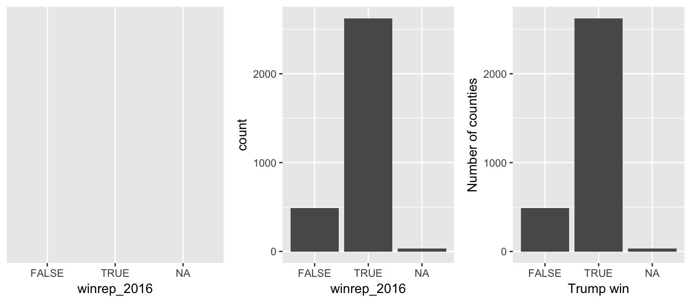

3 Simple Statistics in R
Author: Nathaniel E. Helwig
3.1 Chapter Outline and Goals
In this chapter, we will cover how to…
- Load, explore, and summarize data
- Calculate descriptive statistics
- Create reproducible plots and tables
- Perform one and two sample t-tests
- Fit one-way analysis of variance models
- Conduct simple correlation tests
R has many helpful functions for simple descriptive and inferential statistics, which make reproducible research easy!
3.2 Minnesota Beer Data
3.2.1 Overview
The Minnesota beer data has 44 beers measured on 7 variables:
- Brewery: Name of the brewery (factor with 8 levels)
- Beer: Name of the beer (factor with 44 levels)
- Description: Description of the beer (factor with 37 levels)
- Style: Style of the beer (factor with 3 levels)
- ABV: Alcohol by volume (numeric)
- IBU: International bitterness units (integer)
- Rating: Beer Advocate rating (integer)
Data obtained by NEH from Beer Advocate and the websites of the eight breweries.
3.2.2 Load the Data
Use the read.csv function to load the beer data into R
beer <- read.csv("http://users.stat.umn.edu/~helwig/notes/MNbeer.csv")The dim function returns the number of rows and columns of the data frame
dim(beer)## [1] 44 7The beer data frame has 44 beers (rows) measured on 7 variables (columns).
The names function returns the names of the variables in a data frame
names(beer)## [1] "Brewery" "Beer" "Description" "Style" "ABV"
## [6] "IBU" "Rating"3.2.3 Look at the Data
The head function returns the first six lines of a data frame
head(beer)## Brewery Beer Description Style ABV IBU Rating
## 1 Bauhaus Wonderstuff New Bohemian Pilsner Lager 5.4 48 88
## 2 Bauhaus Stargazer German Style Schwarzbier Lager 5.0 28 87
## 3 Bauhaus Wagon Party West Cost Style Lager Lager 5.4 55 86
## 4 Bauhaus Sky-Five! Midwest Coast IPA IPA 6.7 70 86
## 5 Bent Paddle Kanu Session Pale Ale Ale 4.8 48 85
## 6 Bent Paddle Venture Pils Pilsner Lager Lager 5.0 38 87The summary function provides a summary of each variable in a data frame
summary(beer)## Brewery Beer Description
## Indeed :7 14* ESB : 1 India Pale Ale : 5
## Summit :7 B-Side Pils : 1 English IPA : 2
## Surly :7 Batch 300 : 1 Pilsner Lager : 2
## Bent Paddle :5 Bender : 1 Porter : 2
## Fulton :5 Bent Hop : 1 American Blonde Ale : 1
## Urban Growler:5 Big Boot Rye IPA: 1 Belgian Style Pale Ale: 1
## (Other) :8 (Other) :38 (Other) :31
## Style ABV IBU Rating
## Ale :18 Min. :4.200 Min. :15.00 Min. :79.00
## IPA :17 1st Qu.:5.200 1st Qu.:33.00 1st Qu.:85.00
## Lager: 9 Median :5.600 Median :48.50 Median :87.00
## Mean :5.818 Mean :51.07 Mean :87.18
## 3rd Qu.:6.500 3rd Qu.:68.25 3rd Qu.:90.00
## Max. :7.500 Max. :99.00 Max. :98.00
## 3.2.4 Plot the Data
The brewer.pal function in the RColorBrewer package creates ColorBrewer palettes for plotting
library(RColorBrewer)
MyColors <- brewer.pal(nlevels(beer$Style), "Pastel1")The boxplot function creates simple boxplots
boxplot(ABV ~ Style, data = beer, ylab = "Alcohol By Volume (ABV)",
main = "Alcohol by Style of Beer", col = MyColors)
The plot function creates generic X-Y scatterplots
StyleInt <- as.integer(beer$Style)
plot(beer$IBU, beer$ABV, xlab = "International Bitterness Units (IBU)",
ylab = "Alcohol By Volume (ABV)", pch = StyleInt + 14,
main = "Bitterness vs Alcohol", col = MyColors[StyleInt])
legend("bottomright", legend = levels(beer$Style), pch = 15:17,
col = MyColors, bty = "n")R has functions for saving plots to various figure formats:
- bmp function for bitmap graphics
- jpeg function for JPEG graphics
- png function for Portable Network Graphics
- tiff function for Tag Image File Format graphics
- pdf or dev.copy2pdf functions for Portable Document Format graphics
- postscript or dev.copy2eps functions for PostScript graphics
3.3 Descriptive Statistics in R
3.3.1 Overview
We often need to calculate simple descriptive statistics of variables in a data frame, e.g., to make summary tables. As we have already seen, R is a function based and object oriented programming language. To obtain descriptive statistics, we input an object (e.g., column of a data frame) into the corresponding function. Thankfully, functions in R often have intuitive names—you can typically guess the name of the function you need!
3.3.2 Minimum and Maximum
To calculate the minimum or maximum of a variable, we could use the min or max functions
min(beer$ABV)## [1] 4.2max(beer$ABV)## [1] 7.5or the range function to return both the minimum and maximum
range(beer$ABV)## [1] 4.2 7.5The minimum ABV in the sample is 4.2% and the maximum is 7.5%. To determine which beers have the min/max ABV values, we can use the which.min and which.max functions
minmaxID <- c(which.min(beer$ABV), which.max(beer$ABV))
beer[minmaxID,]## Brewery Beer Description Style ABV IBU Rating
## 12 Indeed Lucy Session Sour Session Sour Ale Ale 4.2 27 86
## 38 Surly Overrated West Coast IPA IPA 7.5 69 913.3.3 Mean, Standard Deviation, and Variance
The mean function calculates the sample mean \(\bar{x} = \frac{1}{n}\sum_{i=1}^n x_i\)
mean(beer$ABV)## [1] 5.818182The sd function calculates the sample standard deviation \(s = \{\frac{1}{n-1} \sum_{i=1}^n (x_i - \bar{x})^2\}^{1/2}\)
sd(beer$ABV)## [1] 0.8176178The var function calculates the sample variance \(s^2 = \frac{1}{n-1} \sum_{i=1}^n (x_i - \bar{x})^2\)
var(beer$ABV)## [1] 0.6684989The mean ABV is about 5.82% with a standard deviation of about 0.82% (variance of about 0.67%).
3.3.4 Medians and Quantiles
The median function calculates the sample median of a vector
median(beer$ABV)## [1] 5.6and the quantile function can be used for other quantiles
quantile(beer$ABV)## 0% 25% 50% 75% 100%
## 4.2 5.2 5.6 6.5 7.5quantile(beer$ABV, probs = seq(0, 1, length=11))## 0% 10% 20% 30% 40% 50% 60% 70% 80% 90% 100%
## 4.20 4.86 5.16 5.30 5.42 5.60 6.20 6.40 6.50 6.87 7.50The median is 5.6% ABV, which implies that half of the beers have at least 5.6% ABV.
3.3.5 Factor Level Information
The levels function extracts the levels (i.e., unique values) of a factor variable
levels(beer$Style)## [1] "Ale" "IPA" "Lager"and the nlevels function returns the number of levels of a factor
nlevels(beer$Style)## [1] 3The 44 beers are classified into one of three Styles: Ale, IPA, or Lager.
3.3.6 Covariances and Correlations
The cov function calculates the covariance \(c = \frac{1}{n-1} \sum_{i=1}^n (x_i - \bar{x})(y_i - \bar{y})\) between two variables
cov(beer$ABV, beer$IBU)## [1] 13.22664or a covariance matrix between the columns of an input data frame
cov(beer[, c("ABV","IBU","Rating")])## ABV IBU Rating
## ABV 0.6684989 13.22664 1.510571
## IBU 13.2266385 461.18129 30.871036
## Rating 1.5105708 30.87104 13.919662The cor function calculates the correlation \(r = \frac{\sum_{i=1}^n (x_i - \bar{x})(y_i - \bar{y})}{\{\sum_{i=1}^n (x_i - \bar{x})^2 \}^{1/2} \{\sum_{i=1}^n (y_i - \bar{y})^2 \}^{1/2} }\) between two variables
cor(beer$ABV, beer$IBU)## [1] 0.7532919or a correlation matrix between the columns of an input data frame
cor(beer[, c("ABV","IBU","Rating")])## ABV IBU Rating
## ABV 1.0000000 0.7532919 0.4951952
## IBU 0.7532919 1.0000000 0.3853018
## Rating 0.4951952 0.3853018 1.00000003.3.7 Applying Functions to Multiple Variables
To apply a function to several columns, we can use the apply function
apply(beer[, c("ABV","IBU","Rating")], 2, range)## ABV IBU Rating
## [1,] 4.2 15 79
## [2,] 7.5 99 98apply(beer[, c("ABV","IBU","Rating")], 2, mean)## ABV IBU Rating
## 5.818182 51.068182 87.1818183.3.8 Applying Functions at Levels of Factors
Use the tapply (ragged apply) function to apply some function to a numeric variable separately at each level of a factor variable. For example, we could apply the range function to the ABV variable separately for each Style of beer
tapply(beer$ABV, beer$Style, range)## $Ale
## [1] 4.2 7.0
##
## $IPA
## [1] 5.8 7.5
##
## $Lager
## [1] 4.5 5.4In the given sample, Ales range from 4.2% to 7% ABV, India Pale Ales range from 5.8% to 7.5% ABV, and Lagers range from 4.5% to 5.4% ABV.
3.3.9 Making a Table
Use the cbind (column combine) function in combination with the tapply function to create tables
tab1 <- cbind(tapply(beer$Rating, beer$Style, length),
tapply(beer$ABV, beer$Style, mean),
tapply(beer$ABV, beer$Style, sd),
tapply(beer$IBU, beer$Style, mean),
tapply(beer$IBU, beer$Style, sd),
tapply(beer$Rating, beer$Style, mean),
tapply(beer$Rating, beer$Style, sd))
colnames(tab1) <- c("n", "ABV.Mean", "ABV.SD", "IBU.Mean",
"IBU.SD", "Rating.Mean", "Rating.SD")
rtab1 <- round(tab1, 2)
rtab1## n ABV.Mean ABV.SD IBU.Mean IBU.SD Rating.Mean Rating.SD
## Ale 18 5.49 0.67 39.00 12.28 86.83 3.50
## IPA 17 6.56 0.46 73.53 10.59 88.18 4.54
## Lager 9 5.06 0.35 32.78 12.58 86.00 1.87The write.csv function can be used to save the table
write.csv(rtab1, file = "~/Desktop/table1.csv", row.names = TRUE)After some minor stylistic edits, the table is ready for publication—without having to manually type or copy-paste numbers!
The kable function (in the knitr package) includes nicely formatted tables in R Markdown documents
library(knitr)
kable(rtab1, caption = "Table 1: Sample size (n) and variable means and standard deviations (SD) for each style of beer.")| n | ABV.Mean | ABV.SD | IBU.Mean | IBU.SD | Rating.Mean | Rating.SD | |
|---|---|---|---|---|---|---|---|
| Ale | 18 | 5.49 | 0.67 | 39.00 | 12.28 | 86.83 | 3.50 |
| IPA | 17 | 6.56 | 0.46 | 73.53 | 10.59 | 88.18 | 4.54 |
| Lager | 9 | 5.06 | 0.35 | 32.78 | 12.58 | 86.00 | 1.87 |
3.4 Student’s t-Test in R
3.4.1 One Sample t-Test
Mass produced beers (e.g., Bud Light, Miller Lite, etc.) have 4.2% ABV. Suppose we want to test if Minnesota beers have the same mean ABV as mass produced beers \[ H_0: \mu = 4.2 \quad \mbox{vs.} \quad H_1: \mu \neq 4.2 \] where \(\mu\) is the mean ABV, and \(H_0\) and \(H_1\) denote the null and alternative hypotheses. Assuming that the ABV scores are normally distributed, the t.test function can be used to test the null hypothesis
t.test(beer$ABV, mu = 4.2)##
## One Sample t-test
##
## data: beer$ABV
## t = 13.128, df = 43, p-value < 2.2e-16
## alternative hypothesis: true mean is not equal to 4.2
## 95 percent confidence interval:
## 5.569603 6.066760
## sample estimates:
## mean of x
## 5.818182The observed t statistic is \(t = 13.13\) with 43 degrees of freedom, resulting in a p-value of essentially zero—we reject \(H_0\) using any standard \(\alpha\) level. The sample mean is \(\bar{x} = 5.8\)% ABV and the 95% confidence interval for the \(\mu\) (population mean ABV of Minnesota beers) is 5.6% to 6.1% ABV.
If we expect that the Minnesota beers have higher ABV than mass produced beers, i.e., \[ H_0: \mu = 4.2 \quad \mbox{vs.} \quad H_1: \mu > 4.2 \] we need to adjust the alternative input
t.test(beer$ABV, mu = 4.2, alternative = "greater")##
## One Sample t-test
##
## data: beer$ABV
## t = 13.128, df = 43, p-value < 2.2e-16
## alternative hypothesis: true mean is greater than 4.2
## 95 percent confidence interval:
## 5.610972 Inf
## sample estimates:
## mean of x
## 5.818182The only noteworthy difference is that the confidence interval is now a 95% lower bound for the mean ABV of Minnesota beers, which we expect to be at least 5.6% ABV. Note that changing the alternative also changes the p-value, but for this example we do not notice (because the p-value is so small).
3.4.2 Two Sample t-Test
Suppose that we want to test if IPA beers have higher ABV than non-IPAs (Ales and Lagers) \[ H_0: \mu_1 = \mu_2 \quad \mbox{vs.} \quad H_1: \mu_1 > \mu_2 \] where \(\mu_1\) and \(\mu_2\) denote the mean ABV of IPA and non-IPA beers, respectively.
To use the t.test function for a two sample t-test, we need to input two vectors
beer$IPA <- (beer$Style == "IPA")
t.test(beer$ABV[beer$IPA], beer$ABV[!beer$IPA], alternative = "greater")##
## Welch Two Sample t-test
##
## data: beer$ABV[beer$IPA] and beer$ABV[!beer$IPA]
## t = 7.4454, df = 40.527, p-value = 2.093e-09
## alternative hypothesis: true difference in means is greater than 0
## 95 percent confidence interval:
## 0.9415048 Inf
## sample estimates:
## mean of x mean of y
## 6.564706 5.348148The observed t statistic is \(t = 7.45\) with 40.53 degrees of freedom, resulting in a p-value of essentially zero—we reject \(H_0\) using any standard \(\alpha\) level. The sample mean difference is \(\bar{x}_1 - \bar{x}_2 = 1.22\)% ABV and the 95% lower-bound confidence interval reveals that we expect IPAs to have at least 0.94% more ABV than non-IPAs.
The default uses the Welch version, which does not assume equal variance for the two groups. The var.equal input can be used to change this assumption, which produces the classic two sample t-test
t.test(beer$ABV[beer$IPA], beer$ABV[!beer$IPA], alternative = "greater",
var.equal = TRUE)##
## Two Sample t-test
##
## data: beer$ABV[beer$IPA] and beer$ABV[!beer$IPA]
## t = 6.9809, df = 42, p-value = 7.74e-09
## alternative hypothesis: true difference in means is greater than 0
## 95 percent confidence interval:
## 0.9234437 Inf
## sample estimates:
## mean of x mean of y
## 6.564706 5.348148Note that the observed t-test statistic, p-value, and 95% lower-bound are slightly different, but our conclusion does not change: we expect IPAs to have at least 0.9% more ABV than non-IPAs.
3.5 One-Way ANOVA in R
3.5.1 Omnibus F-Test
Extending the previous example, suppose that we want to test if the mean ABV differs for the three Styles of beer \[ H_0: \mu_j = \mu \mbox{ for all } j \quad \mbox{vs.} \quad H_1: \mu_j \neq \mu \mbox{ for some } j \] where \(\mu_j\) denotes the mean ABV of the three Styles of beer: Ales, IPAs, and Lagers. Assuming that the ABV scores a normally distributed, we can use the aov (analysis of variance) function
amod <- aov(ABV ~ Style, data = beer)
summary(amod)## Df Sum Sq Mean Sq F value Pr(>F)
## Style 2 16.59 8.297 28 2.16e-08 ***
## Residuals 41 12.15 0.296
## ---
## Signif. codes: 0 '***' 0.001 '**' 0.01 '*' 0.05 '.' 0.1 ' ' 1The observed F statistic is \(F = 28\) with 2 numerator and 41 denominator degrees of freedom, resulting in a p-value of essentially zero—we reject \(H_0\) using any standard \(\alpha\) level. We conclude that the mean ABV of Minnesota beers depends on the Style of beer, but the results do not directly reveal which Styles significantly differ from one another.
3.5.2 Pairwise Comparisons (Tukey’s HSD)
To determine which Styles significantly differ in their mean ABV, we can use Tukey’s Honest Significant Differences (HSD) procedure via the TukeyHSD function
TukeyHSD(amod)## Tukey multiple comparisons of means
## 95% family-wise confidence level
##
## Fit: aov(formula = ABV ~ Style, data = beer)
##
## $Style
## diff lwr upr p adj
## IPA-Ale 1.0702614 0.6225693 1.5179536 0.0000024
## Lager-Ale -0.4388889 -0.9793078 0.1015301 0.1313124
## Lager-IPA -1.5091503 -2.0548418 -0.9634589 0.0000001The pairwise comparisons reveal that
- IPAs have significantly higher mean ABV than Ales. The estimated mean difference is \(\hat{\delta}_1 = \hat{\mu}_{2} - \hat{\mu}_1 = 1.07\) with 95% confidence interval \(\delta_1 \in [0.62, 1.52]\).
- Lagers and Ales do not significantly differ in mean ABV. The estimated mean difference is \(\hat{\delta}_2 = \hat{\mu}_{3} - \hat{\mu}_1 = -0.44\) with 95% confidence interval \(\delta_2 \in [-0.98, 0.10]\).
- Lagers have significantly lower mean ABV than IPAs. The estimated mean difference is \(\hat{\delta}_3 = \hat{\mu}_{3} - \hat{\mu}_2 = -1.51\) with 95% confidence interval \(\delta_3 \in [-2.05, -0.96]\).
3.6 Correlation Tests in R
Suppose that we want to test if a beer’s ABV and Rating are postively correlated \[ H_0: \rho = 0 \quad \mbox{vs.} \quad H_1: \rho > 0 \] where \(\rho\) is the population correlation between the ABV and Rating. Assuming that the ABV and Rating variables follow a bivariate normal distribution, we can use the cor.test function
cor.test(beer$ABV, beer$Rating, alternative = "greater")##
## Pearson's product-moment correlation
##
## data: beer$ABV and beer$Rating
## t = 3.6939, df = 42, p-value = 0.000316
## alternative hypothesis: true correlation is greater than 0
## 95 percent confidence interval:
## 0.2784833 1.0000000
## sample estimates:
## cor
## 0.4951952The estimated sample correlation is \(r = 0.495\) and the 95% lower-bound confidence interval reveals that we expect the ABV and Ratings to have a positive correlation of at least \(\rho = 0.28\).
3.7 Exercises
- Load the Minnesota Beer Data into R.
- Make a boxplot of the IBUs by Style of beer.
- Make a scatterplot of the ABV (x-axis) by Rating (y-axis).
- Calculate some descriptive statistics for the IBU variable.
- Create a table showing the sample size and variable means and standard deviations for each Brewery.
- Repeat the t-tests using the IBU variable as the response.
- Repeat the one-way ANOVA using the IBU variable as the response.
- Repeat the correlation test using the IBU and Rating variables.